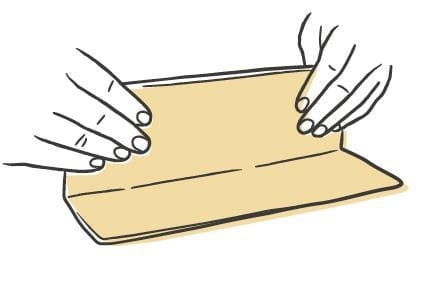
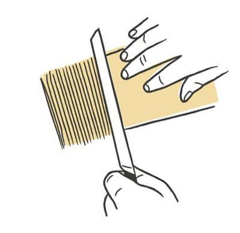
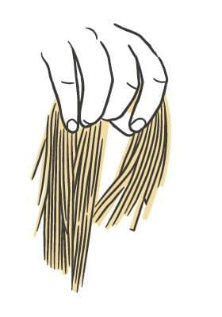

Pasta / Shapes
Maccheroncini di Campofilone
- Dough
- Egg Dough
- Rest
- 20-30 min at room temperature
- Source
- Pasta, Missy Robbins
- Formed
- ribbon
- Region
- The Marche, province of Fermo, around Ascoli Piceno and Campofilone
Shaping




Method
- Make an egg-based dough, then roll and sheet it.
- Give a wooden work surface a light dusting of 00 flour. Line a sheet pan with parchment, then dust the parchment with semolina.
- Knife the sheets into 18-inch lengths and trim the ragged edges off. Save the trim for soup. Keep the sheets under plastic or a towel.
- Fold one sheet in half, then in thirds, until you have a packet about 4 1/2 by 6 inches. Turn it so the long side faces you and trim the ends. Cut 1/10-inch strands, working inward from one edge.
- Dust the strands heavily with 00 flour and shake them apart. Coil the batch into a nest on the pan.
- Repeat with the rest of the sheets.
- Dry 20 to 30 minutes at room temperature.
- To hold, cover the pan with plastic and refrigerate up to 24 hours.
Notes
- Cut width is 1/10 inch, by hand off a folded packet. No cutter attachment.
- The book also describes the shape as often under 1 mm wide, which is thinner than the 1/10 inch the cutting step specifies. Treat 1/10 inch as the working figure.
- Thinner than tagliolini, which is itself a thinner tagliatelle. Same family as tajarin.
- Cooks very fast and goes to mush if it sits. Sauce it immediately.
- Coiled into a nest, not spread flat.
- Refrigerated shelf life is 24 hours.
- Traditional pairings are a beef-spiked red sauce or a fish ragu. Robbins prefers the meat version.